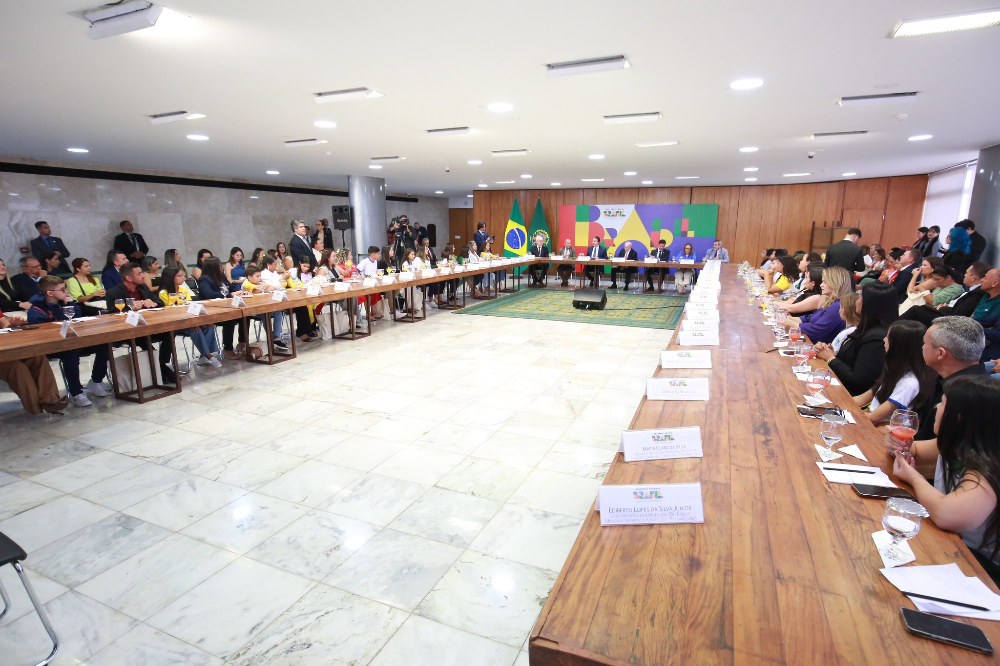

O papel dos coletivos na Gestão Democrática de uma instituição
Mas o que isso tem a ver com gestão democrática e representatividade na EPT?
Depois de considerarmos que a EPT possui um mote epistêmico, ético e político muito particular, uma gestão que se pretende democrática não pode desconsiderar que não somos empresas, não somos educação geral e tampouco somos autarquias voltadas para a produção de mão de obra barata e formação rasa e acelerada. Se de fato assumirmos isso, teremos alguns desdobramentos de ordem teórica e prática que devem ser considerados como premissa de boa gestão neste segmento.
Em primeiro lugar, precisamos olhar para o tema do trabalho com atenção e rigor epistêmico; sendo o trabalho o princípio educativo e mote de nossas ações, não podemos pensar e agir sem o critério da contradição. Como mencionou o pensador (2005), o pensamento sempre deve estar voltado e direcionado para lidarmos por contradição e não para pensarmos a contradição.
Dito de outro modo, não podemos olhar a realidade como algo dado, como algo essencialista, como uma mônada pré-determinada, mas como um processo vivo e em constituição pela dialética. Assim, a gestão democrática na EPT não pode negligenciar os diferentes segmentos, categorias, minorias: todos os sujeitos que fazem parte da constituição de instâncias consultivas e decisórias; considerando, é claro, a complexidade, as ramificações, os desdobramentos e os desafios que cada sujeito e o seu entorno impõem na totalidade dos processos complexos e vivos de gestão.
Técnicos Administrativos e Educacionais
O caminho mais seguro é estimular a representatividade e sua devida legitimidade. Dessa forma, podemos encontrar maneiras de investigar se as decisões relacionadas à categoria dos servidores técnicos administrativos, por exemplo, asseguram o mínimo necessário para o acolhimento e inclusão de suas perspectivas e pautas. Estimular ações e atividades de debate, participação coletiva e mediações que possam apurar qual é a demanda da categoria e quem melhor a representa – para cargos como Conselho Superior, Colegiado de Campus, Colegiados de Cursos, e mesmo na entidade que representará a categoria –, são bons exemplos de ações. O caminho é complexo, mas é o único modo de estimular e exercitar o congraçamento dos pares em torno das suas próprias pautas.

Título: Representatividade e participação coletiva
Fonte: Luis Fortes (2023).
Nas unidades da Rede Federal, por exemplo, existe uma definição para a associação dos pares; nesse caso os Técnicos em Assuntos Educacionais, os quais deverão ser treinados, estimulados, motivados e assessorados para que o grupo possa bem representar-se diante da gestão de um campus e mesmo da reitoria. Não para impor suas pautas e demandas, mas para ponderar e refletir com as instâncias devidas de modo que as decisões que dizem respeito à categoria possam ser pensadas, refletidas, representadas e defendidas pela oitiva constante da própria categoria. A representatividade é a condição de possibilidade de uma gestão democrática na EPT. Mas, para tal, as pautas não podem ser o recorte de uma mera demanda pessoal ou de parte da colegialidade, mas o resultado dialogado daquilo que de fato expressa a necessidade mais premente de todos. Tal necessidade deve ser expressamente reconhecida e garantida por meio de pessoas que atuem em nome do grupo ou categoria (eleitas preferencialmente por sufrágio). Esse deve ser o processo ideal em todas as instâncias de decisão, seja nas unidades que denominamos campus ou na reitoria. Conheça os pilares da Gestão Democrática na EPT no infográfico a seguir:

Título: Pilares da Gestão Democrática na EPT
Fonte: Prosa (2024f).
É de vital importância que na representação da categoria estejam minimamente contempladas todas as aspirações, tendências, demandas e visões possíveis. Estará comprometido esse processo de democratização se houver oligarquias (ou uso do poder por parte de alguns) para pautar determinadas demandas de cunho privado como se fossem de interesse comum. Portanto as assembleias, reuniões, encontros e formações devem ser espaços de escuta constantes para o treinamento e aprimoramento das decisões em prol da coletividade. Esse papel de fomentar o debate e a articulação da categoria é (e deve ser) um compromisso da gestão, para que essas instâncias amadureçam e cresçam visando a pauta da categoria em consonância com a demanda fim da instituição.
Estudantes
A categoria dos estudantes, nos diferentes níveis, precisa ser estimulada, a exemplo do movimento de participação gradativa dos Técnicos Administrativos. Tanto que nos cursos Técnicos Integrados é de suma importância o estímulo e as orientações para formação de um grêmio estudantil sólido e de uma diretoria que de fato represente com qualidade as demandas do segmento estudantil. Convém lembrar que o grêmio estudantil não é parte da gestão de uma unidade, mas é a voz de participação de estudantes nos processos decisórios em todos os níveis.
Para essa categoria, é importante o exercício do meio termo. Assim como a administração de uma instituição de EPT não pode sequestrar a pauta dos estudantes em seu favor ou desfavor, não é saudável permitir que essa participação estudantil extrapole a sua finalidade, interferindo em instâncias que não são devidas. O grêmio estudantil é o espaço de treinamento para a cidadania ativa e capacitação dialógica para novas lideranças. Mas, pela natureza da idade e da finalidade desta agremiação, é importante um acompanhamento por parte das gestões locais e reitorias, a fim de formar lideranças e incentivar a representatividade em seu sentido lato e estrito.
De todo modo, é importante que a gerência central e das unidades educativas acompanhem e incentivem os estudantes a participarem das decisões que lhes dizem respeito, a fim de exercitar a liderança e a representação, transformando-os em cidadãos e cidadãs ativos. Conforme observou a filósofa Martha Nussbaum (2010), a representatividade e o exercício democrático dependem de “competências e habilidades” que precisam ser difundidas, treinadas, exercitadas e incentivadas.
Aqui, é preciso lembrar da discussão trazida por Hannah Arendt na obra A Condição Humana (2005): o próprio mundo do trabalho implica, muitas vezes, o abandono da ação (como práxis política), uma vez que o ser humano fica muito preso às demandas estafantes do ofício. O modelo de vida social contemporâneo (fundado no trabalho como modo de sobrevivência) distancia-se do modelo antigo de relação com a natureza e com os outros, no qual a ocupação era destinada à subsistência e predominavam as atividades de caça, coleta e pesca, e a ocupação humana não impedia o cuidado com a convivência familiar ou social.
Para Arendt (2005), o ciclo histórico da transição do labor para o trabalho industrial não apenas significou maior quantidade de tempo envolvido nas atividades, mas impactou no modus operandi, pois, segundo a nova lógica, a dimensão política e o exercício da cidadania ficaram relegados a um segundo plano, em virtude do trabalho ser empreendido para conquistar dividendos que atendessem às demandas de consumo do capital.
Arendt (1997) ainda considera que a definição de política e de amor trazidos por Santo Agostinho parece ser intimista demasiadamente. Não é uma busca do autoconhecimento para o saber governar-se ou ser governado, como Platão sugeriu, mas, em tese, é dedicação exclusiva nosce te ipsum (conhece-te a ti mesmo, em latim). Segundo ela, isso pode reduzir o campo social e político ao gosto e o encantamento para uma experiência mais subjetiva e solitária, sem o exercício cidadão mais ativo na vida pública. Arendt parece discordar da visão política de Santo Agostinho, que subordina as leis humanas às divinas e defende que as cidades humanas deveriam ser uma réplica da cidade divina (o céu). Para a filósofa, a idealização de uma vida perfeita e feliz (seja aqui neste mundo ou na suposta vida eterna) relativiza a importância da ação humana nesta vida, o que pode incorrer tanto no afastamento da vida ativa na política como em pensar que as relações humanas e efêmeras deste mundo são casualidades sem importância, considerando o eterno que virá depois. Para ficar mais claro, basta lembrarmos que, por causa das convicções agostinianas, as universidades, logo em seu início, proibiam os textos de Aristóteles, pois eles traziam um compromisso político muito mundano: “bene vivere” (Rodrigues, 2011). Na visão aristotélica, a ética e a política são instâncias que precisam ser resolvidas na práxis do cotidiano e, para sermos efetivamente felizes, precisamos ser virtuosos aqui e agora – não na eternidade.
Esse movimento de cuidado de si acabou incorrendo gradativamente em um processo de preterir a vida pública (ação, no sentido político) a segundo plano. Para Arendt (2005), esse movimento de enclausuramento do eu favorece também, de algum modo, a falta de reflexão em torno do impacto de nossas escolhas e ideias no universo político e ético (coletivo). Com isso, o gradativo desencanto pela reflexão – e pela importância do pensamento para a vida coletiva – abre possibilidades para todo tipo de totalitarismo. Para a filósofa, sistemas autoritários como o nazismo e o fascismo são possibilidades em qualquer espaço e tempo, pois são decorrentes da negligência com a vida reflexiva, que cria as condições para o totalitarismo.
Dito isso, é imprescindível que tenhamos o devido cuidado de estimular a reflexão e de capacitar nossos estudantes de todos os níveis para o exercício de uma cidadania plena, em todos os momentos e segmentos de nossos cursos. Da mesma forma, os centros acadêmicos, os cursos de nível superior e mesmo a pós-graduação podem e devem ser um espaço de formação de lideranças e de exercício da democratização institucional, zelando para que haja legítima representatividade dos estudantes nas instâncias decisórias institucionais. Não resta a menor dúvida de que o antídoto contra toda e qualquer perspectiva totalitária decorre da reflexão e da participação de todos os segmentos e categorias nas instâncias decisórias (Arendt, 2005; Nussbaum, 2010).